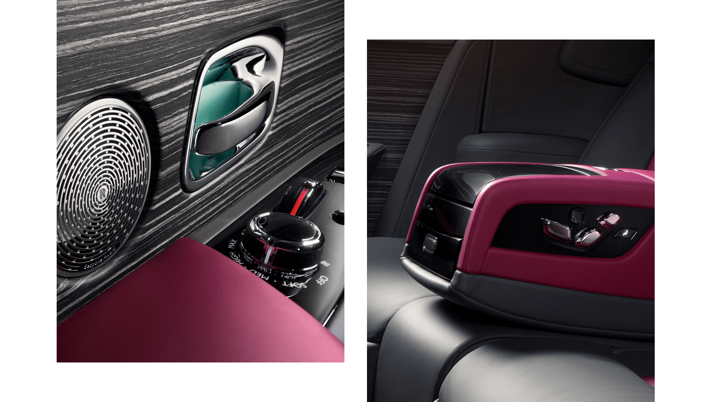
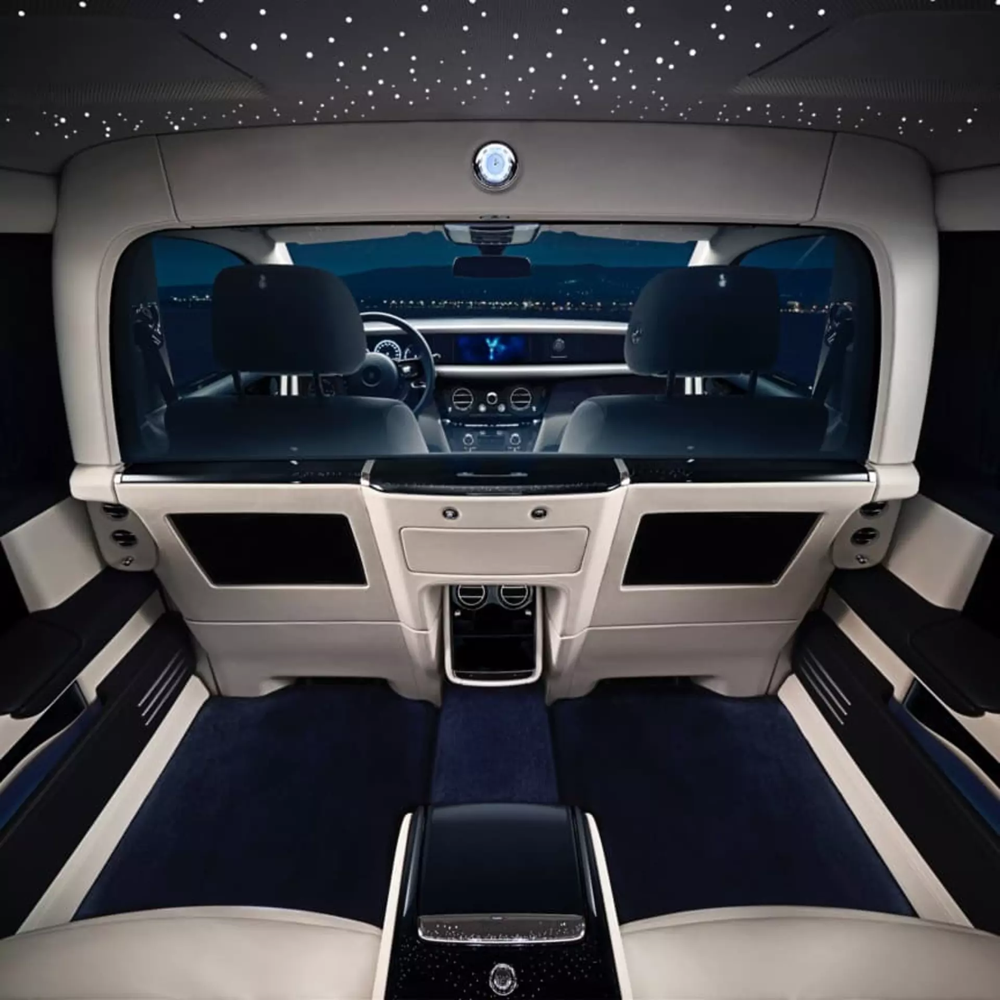
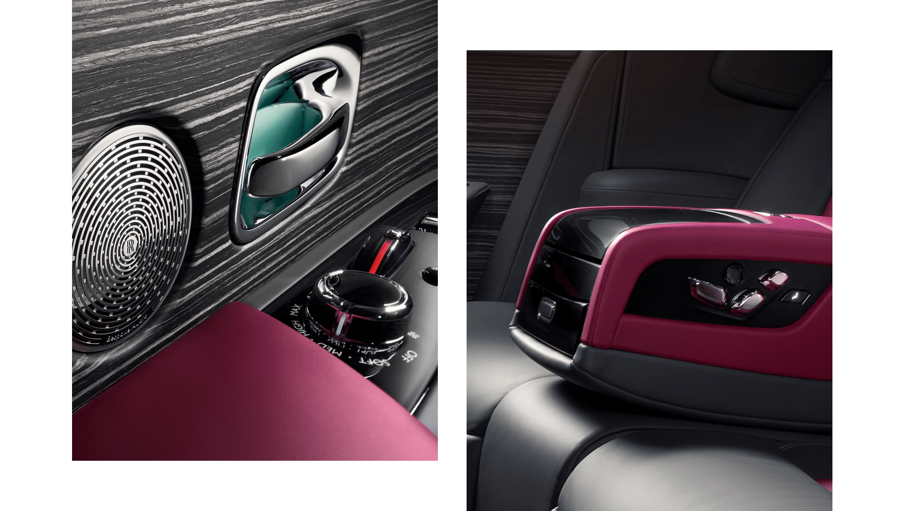
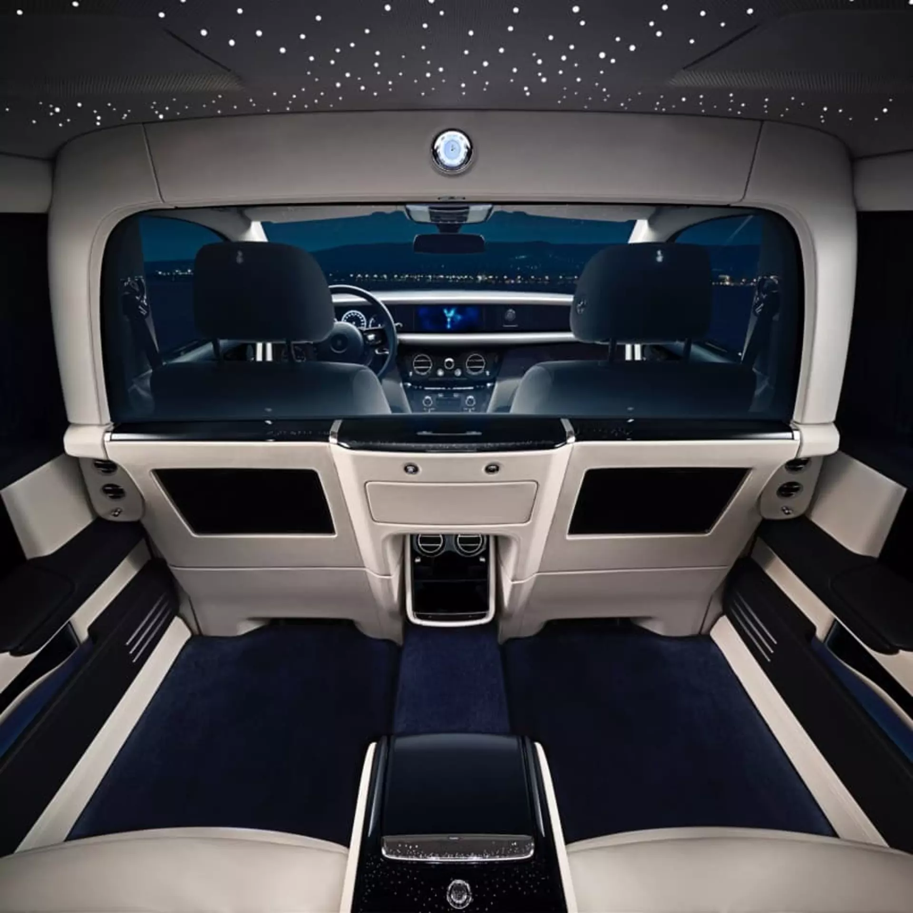

Mastery in Every Detail
From the hand-stitched leather to the meticulously selected wood veneers, every Rolls-Royce is a testament to human skill and attention to detail. Our artisans and engineers collaborate to create not just vehicles, but works of art.
 



1.png)
Time-Honored Techniques
Our craftspeople blend traditional techniques with modern precision to ensure each car stands the test of time — in both performance and style.